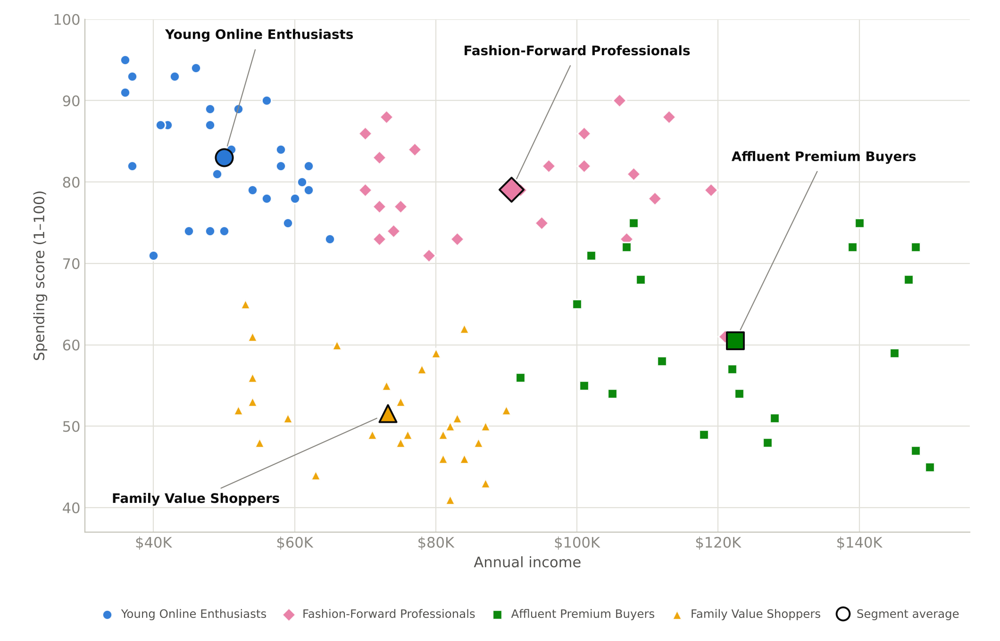
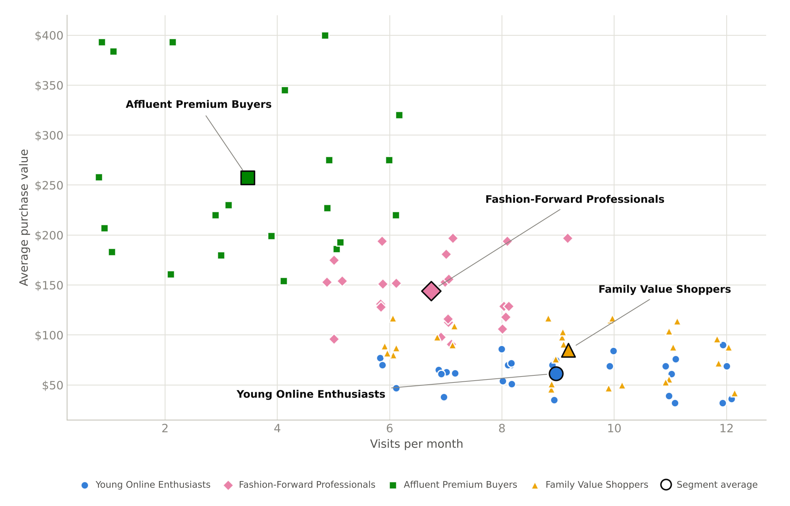
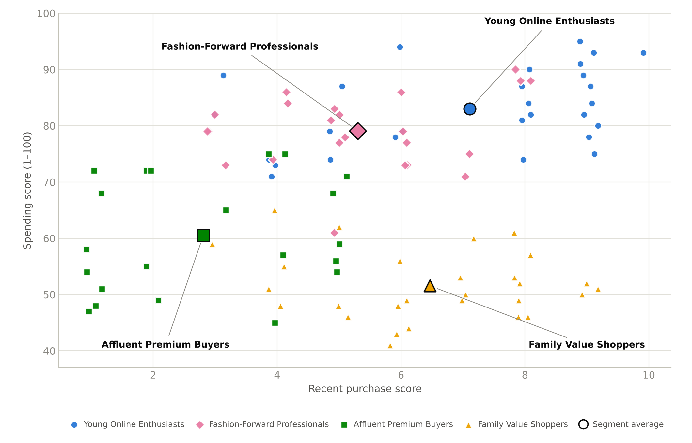

Young Online Enthusiasts
High-energy, low-ticket digital shoppers
- Share
- 28%
- Avg age
- 29
- Avg income
- $50K
- Spending score
- 83
- Avg order
- $62
- Visits / month
- 9.0
- Channel
- 86% online
Buys gaming, beauty and apparel
Case study · AI for Marketing
In AI for Marketing, we learned how to use AI to “humanize the data,” turning rows in a spreadsheet into people a marketer can actually picture. Starting with a file of 100 customers, I ended up with four personas, each with its own plan for how to reach them.
A row of numbers like age, income, spending score and visits per month doesn’t tell a marketer who they’re talking to. The goal was to use AI to find the natural groups hiding in those numbers, then describe each group as a person with habits and motivations a team could design for.
Segment averages from the 100-customer dataset.
High-energy, low-ticket digital shoppers
Buys gaming, beauty and apparel
High value and highly engaged
Buys health and fitness, beauty and apparel
Rare visits, big tickets
Buys home décor, health and fitness, and electronics
Routine, price-conscious necessity buyers
Buys kids’ items, groceries, home décor and pet supplies
Each dot is a customer, and the large outlined marks are segment averages.

The lowest-income segment, Young Online Enthusiasts ($50K), has the highest spending score (83). Affluent Premium Buyers earn the most ($122K) but score only 61.
So what: Target people on how they behave, not just on their income bracket.

The segments that visit most (9+ times a month) spend the least per order ($62–$85). Affluent Premium Buyers visit 3.5 times a month but spend $257 per order on average.
So what: Fashion-Forward Professionals hit the sweet spot, with 6.7 visits and $144 orders.

Affluent Premium Buyers have the lowest recent-purchase score (2.8), while Family Value Shoppers buy often (6.5) but score lowest on spending.
So what: Win back the premium buyers, and treat family shoppers’ visits as routine rather than impulse.
Segment on behavior. Income alone is misleading, since the lowest earners have the highest spending score.
Pull two growth levers. Grow basket size for frequent shoppers, and grow visit frequency for big-ticket buyers.
Match the channel to the age group. The two younger segments shop mostly online (70–86%), and the two older ones shop mostly in-store (57–61%).
| Segment | How to reach them |
|---|---|
| Young Online Enthusiasts | Grow the basket with social and mobile campaigns, bundles and free-shipping thresholds above their $62 average order. |
| Fashion-Forward Professionals | Protect and grow them with a loyalty tier, personalized recommendations and early access to new apparel and fitness lines. |
| Affluent Premium Buyers | Re-engage them with in-store appointments, premium service and win-back offers after long gaps between purchases. |
| Family Value Shoppers | Win on value with everyday low prices, family bundles, points on repeat necessities and easy in-store pickup. |
AI made the math fast, but the valuable part was everything around it: deciding which measures mattered, checking that the results were honest and translating clusters into people. A segment only becomes useful once you can describe who’s in it and what they need.
I also learned to look for shortcuts in the data. A hidden answer key could have made the segments look better than they really were, and catching it is what made the results worth trusting.